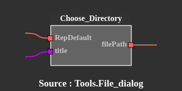
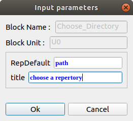
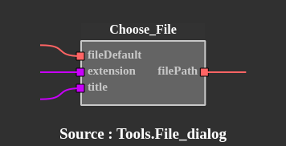

Tools.File_dialog
Requirements :
Tkinter - apt-get install python3-tkChoose_Directory :
Displays a dialog box from which the user can select a repertory.
|  | RepDefault : default directory - format path title : dialog box title - format string filePath : repertory path selected - format path |
 |
Choose_File :
Displays a dialog box from which the user can select a file.
|  | fileDefault : default file - format path extension : filtering extension (may contain more than one) title : dialog box title - format string filePath : file path selected - format path |
 |
Choose_multi_Files :
Displays a dialog box from which the user can select several files.
 |
filesDefault : list of default files - format list of path extension : filtering extension (may contain more than one) title : dialog box title - format string filesPath : files path selected - format path numberOfFiles : number of files selected - format integer |
 |